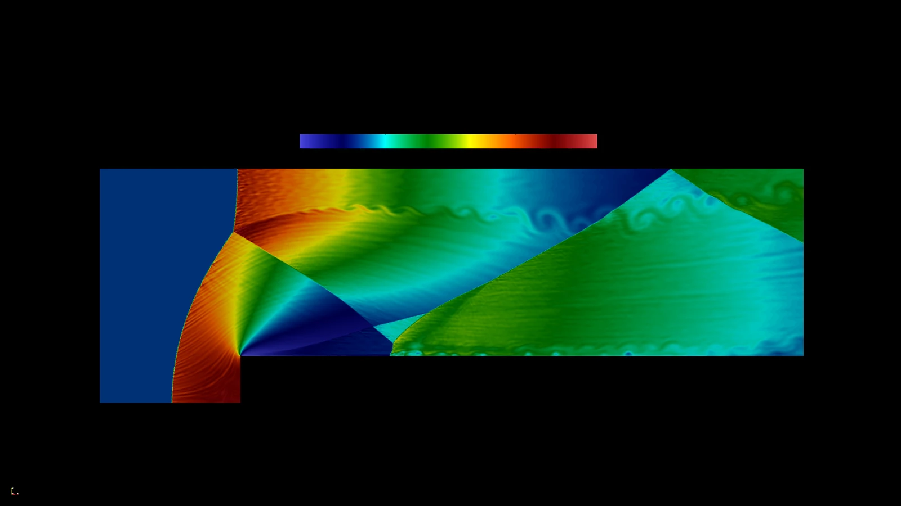

Ricerca
Dalla modellistica matematica alla simulazione numerica di fluidi comprimibili e plasmi.
In corso
Dottorato
Modelli matematici per l’ingegneria, elettromagnetismo e nanoscienze
Sapienza Università di Roma. Il programma mette in relazione la modellistica matematica con applicazioni nell’elettromagnetismo e nelle nanoscienze.
2026 · Laurea magistrale
Tesi magistrale
Second order Discontinuous Galerkin method for two-dimensional hyperbolic systems
Ho sviluppato e validato un solver in C basato sul metodo Discontinuous Galerkin del secondo ordine per sistemi iperbolici in due dimensioni. Ho applicato il solver a fluidi comprimibili e plasmi, con test di accuratezza e stabilità in presenza di onde d’urto e altre discontinuità.
- Metodo
- Discontinuous Galerkin
- Ordine
- Secondo
- Implementazione
- C
Il caso Forward-Facing Step mostra l’evoluzione di un flusso comprimibile in presenza di un gradino. Il caso Orszag–Tang riguarda l’evoluzione di un vortice magnetoidrodinamico bidimensionale.
Guarda entrambi i video
2024 · Laurea triennale
Tesi triennale
La decomposizione ai valori singolari troncata (TSVD)
Tesi di laurea in Matematica presso Sapienza Università di Roma, dedicata alla decomposizione ai valori singolari troncata.